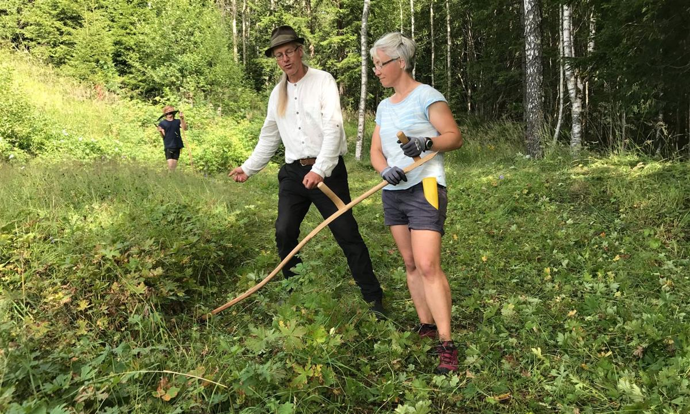

Kristina Bjureke, the chief botanist at the natural history museum in Oslo, examines a flowering plant with horticulturalist Tor Mjaaland. Bjureke wrote the plant management plan for city’s hay meadow campaign. Photograph: Jonathan Watts for the Observer
Jonathan Watts
Norway wants urban gardeners to cultivate wildflowers and keep hives to reverse a decline in biodiversity
On a sloping meadow near the centre of Oslo, red-tailed bumblebees gather pollen from hairy violets, spiders spin webs between maiden’s tears while hoverflies buzz between yellow daisies and white yarrow.
Such a bucolic scene might normally be associated more with a rural past than an urban future, but it is part of a thoroughly modern attempt to reverse the decline of bee populations and put biodiversity at the heart of city planning in Norway’s capital.
Since last year, Oslo’s municipal government has established more than 10 meadows, botanists run workshops on scything and planting, and garden owners are replacing their trimmed lawns and exotic plants with grasses and wildflowers to attract pollinators.
It is linked to a national strategy that includes measures to encourage private garden owners to cultivate wildflowers along an urban insect corridor. An NGO – Bybi – is encouraging more people to keep hives.
The enthusiasm has surprised some of the campaign’s most ardent proponents. “We had more than 60 people come out in the rain for a recent tour,” said Kristina Bjureke, a botanist at the natural history museum who wrote part of the plant management plan for Oslo’s meadows. “It must have looked a little crazy to see all those people staring at a patch of grass.”
Although biodiversity is usually associated with tropical forests, this northern municipality – which was recently named Europe’s Green Capital for 2019 – claims to be the most species-rich capital in Europe thanks to its fjord, forests and parks, home to 13,156 varieties of flora and fauna.
Oslo’s vice-mayor Lan Marie Nguyen Berg, from the Green party, has given biodiversity a central role in urban planning. Photograph: Jonathan Watts for the Observer
Until recently, however, the city’s better known green credentials – and efforts to offset the uncomfortable fact that its main source of revenue is oil – have been impressive goals to halve carbon emissions by 2020, recycle waste and promote the use of clean transport with tax credits, free charging, free tolls and use of bus lanes.
But biodiversity has moved up the political agenda since the small Green party became kingmaker in the city’s governing coalition two years ago. The Greens championed the hay meadows to protect some of Oslo’s most vulnerable species at a time when the city’s human population was increasing more rapidly than that of almost any other European capital.
“We know that we need to protect and restore biodiversity even as we build new homes. In a city that is growing fast, it’s also important to make it nice to live. That means good quality green areas,” said vice-mayor Lan Marie Nguyen Berg from the Green party. “We’d like to transfer the knowledge that we have to other cities.”
For centuries, meadows were used here and in many other countries to grow winter fodder for cattle on nutrient-poor land that was unsuitable for continuous large-scale grazing. The annual cycle of cutting and growing nurtured an abundance of insects, plants, fungi, birds, small mammals and wild grazers such as deer on these sunny grasslands.
But they have declined in recent decades due to the expansion of industrial farming and land use for buildings. Botanists say there are almost no meadows left in nearby Denmark. Britain has also witnessed a decline. With 24% of Oslo’s 4,000 red-listed species depending on meadows, the government decided to recreate the habitat in a dozen pilot plots.
This number is set to grow. The Norwegian council for biodiversity (Sabima) has lobbied the government to provide a budget for farmers to maintain meadows and other ecologically important areas. There are now 32 of these biodiversity hotspots. Over the next decade, they aim for 100.
“Oslo can be considered a model because we know what’s there and how to protect it,” biologist and campaigner Anna Blix said during a rainy walk through one of the latest additions in Tøyen Park. “We don’t have huge endangered mammals in meadows, but there are many important plants and insects that are at risk.”
As well as the economic benefits that come from pollinators, she said a strong natural habitat was likely to be more resilient to storms and rising temperatures. “It is increasingly recognised that biodiversity is crucial for action against climate change.”

Mowing exercise at a meadow with high biodiversity in the northern part of Oslo. Photograph: Norway Natural History Museum
The cost is low because some of the meadow grasses are “weeds” that would grow by themselves on untended land. But there is also a technical side of the project that involves the selection of appropriately poor soil and the cultivation in nurseries of the right species to maximise ecological richness so that bees and other pollinators can thrive for much of the year.
Bjureke said the campaign made economic sense – and not just because of the bees. She cited the case of mountain arnica, which is used in the production of anti-inflammatory creams. This ground-hugging yellow daisy depends on the regular scything of longer grass once a year so it can get sufficient light. But with this custom in decline over recent decades, the once common flower is now on the nation’s red list for endangered species, leaving the cream business dominated by German pharmaceutical companies that buy daisies from Romania.
Thanks to the improved collaboration between city hall, scientists and NGOs, she hopes Oslo can arrest the decline. “More and more people are asking how they can get involved and they are getting younger and younger. For me, the most positive trend is that more students are now interested in field biology than lab studies of DNA.”
Amateur biologists are now helping scientists with a nationwide biodiversity census that aims not just to count and locate species, but to highlight their value.
There is a long way to go. Insect corridors help to raise awareness in cities but they cannot solve the bigger problems in the countryside caused by pesticides and industrial farming. Those who want to protect Oslo’s ecological wealth know it is more important to prevent development encroaching on the forest and to scale down the nation’s dependence on fossil fuels. Compared to the areas of robot-mowed grass in the city’s parks, the urban meadows are tiny but their value is not just a matter of size or money, according to Bjureke.
“When I go to the meadows, I feel complete. I see the activity and complexity of nature, the composition of small and big species. It’s the best way to relieve stress. Much better than meditation or medication.”
SOURCE: THE OBSERVER